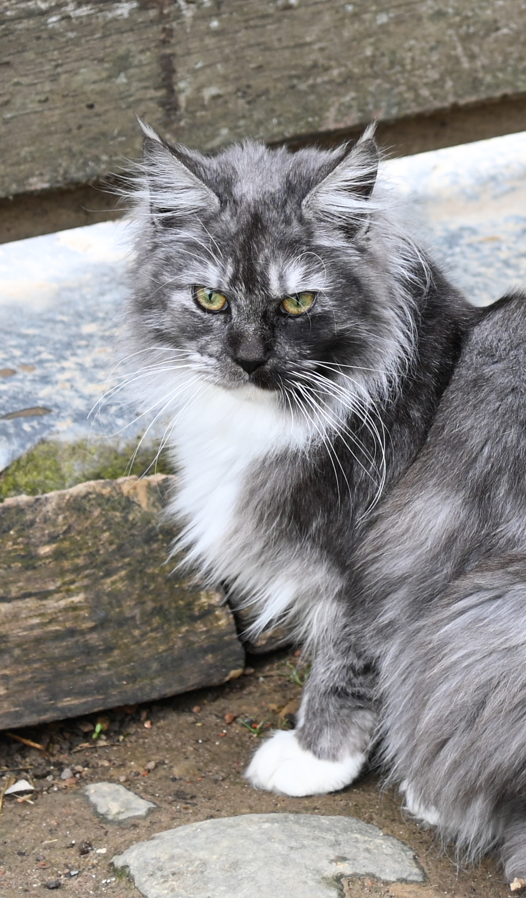

Our cats

A passionate, small-scale Maine Coon cattery on an authentic traditional farmstead
Join the waiting listWelcome to Fort Maine Coon. We are a family for whom passion for animals and care come first — as a veterinarian and a teacher, we combine professional knowledge with a warm, homely environment.
Because we homeschool our children, there is almost always someone at home. Our cats and kittens grow up as full members of the family, constantly surrounded by attention, calm and daily interaction.
At Fort Maine Coon we believe in responsible, well-considered breeding, with health, welfare and breed type at the centre.
Our cats have access to the sheltered inner courtyard of the farm, so they can experience the outdoors safely. This environment, combined with a calm and traditional way of life, contributes to their balanced and curious character.
We deliberately keep our cattery small, so that every cat and every litter gets the time, attention and care it deserves. To us, our cats are first and foremost beloved pets, and their welfare always comes first.

A kitten from Fort Maine Coon is more than a purchase — it is the start of a special bond with an animal that grew up at the heart of our family.
From a young age our kittens get used to people, children and everyday situations — the foundation of the sociable, stable character the Maine Coon is known for. Each kitten leaves only when it is ready: at least 12 weeks old, vaccinated, dewormed and with an official pedigree.
We always arrange a personal visit before the handover, so you can get to know your kitten in its familiar surroundings and we can guide you through the move to its new home.
All our kittens are sold with an official pedigree from the BCF (Belgian Cat Fanciers). To us this is no formality — it is a deliberate choice with far-reaching consequences.
By requesting pedigrees from a recognised studbook association, we are obliged to follow an approved breeding programme. This means strict rules on health screening, limiting inbreeding, minimum age at handover and animal welfare. A pedigree is therefore not just proof of ancestry — it is a guarantee that your kitten was bred within a framework of transparency and responsibility.
We are always open to questions — before, during and after the handover. You are always welcome to visit your kitten before the handover, and we love to follow how your Maine Coon grows up in its new home.
All seven kittens of our first litter (Sansa × Master Yoda of Whitfreynick, born 27 June 2026) have now gone to their new homes. We are so happy with the lovely families they have found!
See the photos of their first weeks here.
We are planning our next litter for early spring 2027. Join the waiting list now — we will contact you as soon as possible.
Join the waiting listInterested in a kitten from Fort Maine Coon? Contact us personally or fill in the form below to join the waiting list. We will get back to you as soon as possible.